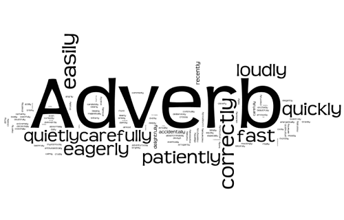

Adverbs
An adverb is a word that modifies (describes) a verb (he sings loudly), an adjective (very tall), another adverb (ended too quickly), or even a whole sentence (Fortunately, I had brought an umbrella). Adverbs often end in -ly, but some (such as fast) look exactly the same as their adjective counterparts.
Example:
Tom Longboat did not run badly.
The race finished too quickly.
Fortunately, Lucy recorded Tom’s win.
Quiz Time!
Choose the correct answer.